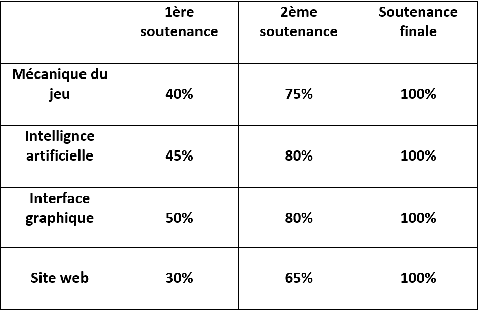

Avancement
Cette image represente l'avancement de notre projet a travers quatre categories : les mecaniques de jeu, l'intelligence artificielle, l'interface graphique et le site web.
La timeline est divisee en trois, la premiere soutenance, la deuxieme soutenance et la soutenance finale. La premiere soutenance presente une progression plus faible dans toutes les categories.
Pour la deuxieme soutenance, nous envisageons d'atteindre entre 60% et 80% de completion, et pour la soutenace finale, toutes les categories atteignant 100% de completion a la fin du projet.
